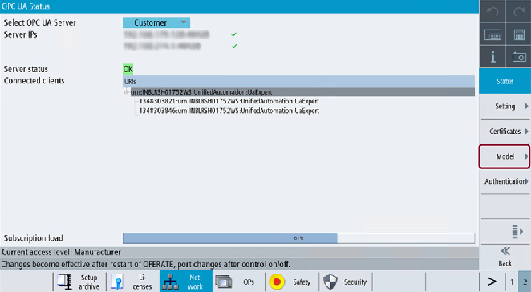

To have a comfortable way to work with a customer specific object model, the OPC UA dialog offers a special section, which can be found under the softkey "Model".
Softkey Model
The SINUMERIK Operate dialog has the following functionality:
Import of CSOM binary file(s) from USB/Networkshare or via AMM
View the filename of the selected binary file(s)
Expand and view the namespaces of the selected binary file(s)
Deleting the selected binary file(s)
Activate the selected binary file(s)
Deactivate the selected binary file(s)
| Note |
The changes are visible only after restarting the OPC UA server. |